أريحا.. نبض الحياة في أقدم مدائن الأرض
"تميزت معالم أريحا ومؤسساتها العريقة بقدرتها على ربط الماضي العريق بالحاضر الحي. من أسواقها المركزية التي تفوح برائحة الموز والتمر، إلى منابرها الثقافية والأكاديمية وصروحها الخدمية التي تروي حكاية مجتمع يجدد الحياة كل يوم في أخفض بقاع الأرض وأقدمها صموداً."
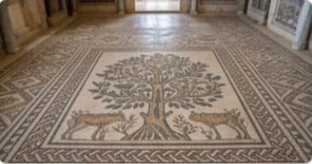
قصر هشام والأرضية الفسيفسائية
قصر أموي تاريخي يعرض فنون العمارة والفسيفساء الإسلامية الرائع في العالم، ويعكس الغنى الثقافي والتاريخي للمنطقة.
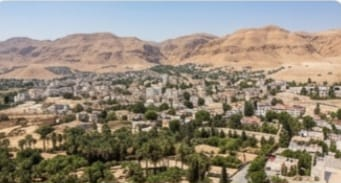
منظر عام لمدينة أريحا
تقع مدينة أريحا في قلب غور الأردن، وهي أقدم مدينة مأهولة باستمرار في العالم، والزراعة المروية، وتحيط بها الجبال الصحراوية الخلابة.
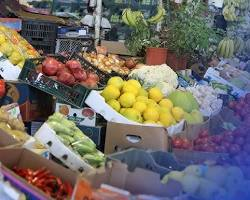
سوق أريحا المركزي
سوق شعبي نابض بالحياة يعكس التراث التجاري للمدينة، ويقدم مجموعة متنوعة من المنتجات المحلية والغذائية والحرفية.
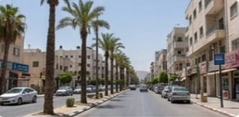
شارع في وسط أريحا
أحد الشوارع الحيوية في قلب المدينة، يربط بين مختلف المعالم والمناطق السكنية والتجارية، ويتميز بالأجواء الهادئة والنخيل.
حارسة التاريخ وصانعة الحاضر
"الاماكن العريقة التي تدير تفاصيل الحياة اليومية في أقدم المدن، لتظل أريحا واحة خضراء تستقبل ضيوفها عبر العصور."
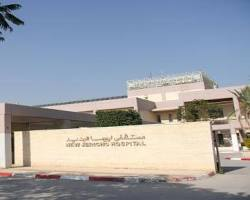
مستشفى أريحا الحكومي
المستشفى الحكومي الرئيسي في محافظة أريحا، يقدم خدمات صحية شاملة لسكان المدينة والقرى المجاورة.
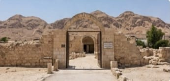
تل أريحا القديم (تل السلطان)
الموقع الأثري لأقدم مدينة مسورة في العالم، يعود تاريخه إلى آلاف السنين، ويضم بقايا الحضارات القديمة التي تعاقبت على المنطقة.
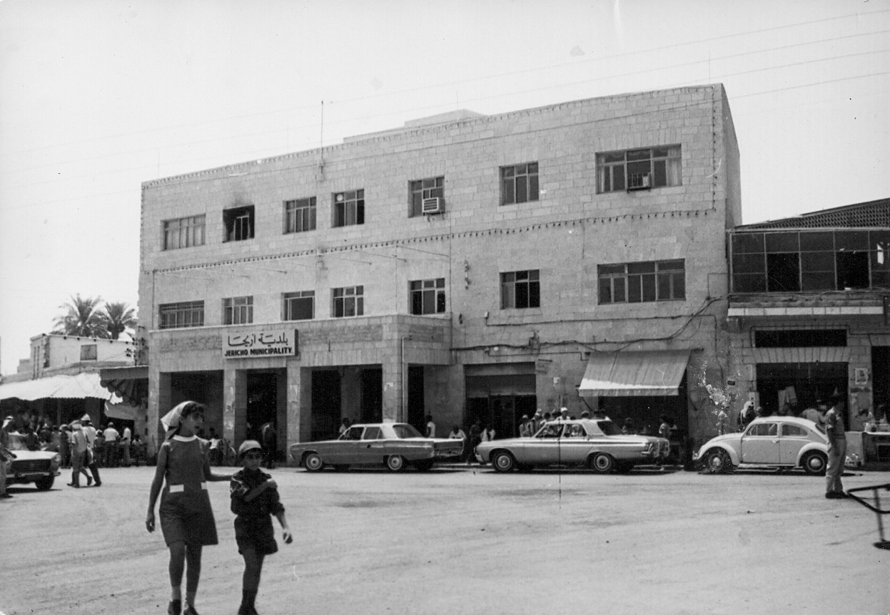
بلدية أريحا
الجهة المسؤولة عن إدارة شؤون المدينة وتقديم الخدمات للمواطنين والعمل على تطوير البنية التحتية والمظهر الحضاري للمدينة.
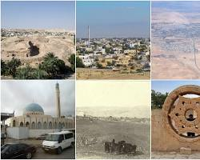
مجمع المقاطعة الثقافي والإداري
مركز ثقافي وإداري هام في المدينة، يمثل الحضور الرسمي الفلسطيني ويستضيف الفعاليات والأنشطة الثقافية المختلفة.
صرح الإدارة ومنارة الثقافة
"حيث تدار شؤون المدينة الحيوية وتلتقي الأنشطة والمهرجانات لترسم المشهد الثقافي والوطني لأقدم مدن العالم."

حديقة تابعة لبلدية أريحا
متنفس طبيعي لأهالي المدينة، يضم مساحات خضراء وألعاباً للأطفال ومناطق للجلوس والمشي لممارسة الأنشطة الترفيهية.
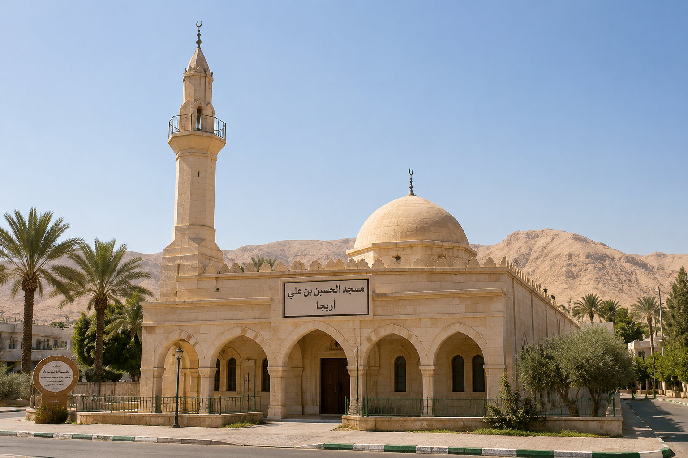
مسجد الحسين في أريحا
أحد المساجد الرئيسية والهامة في المدينة، يتميز بتصميمه المعماري وموقعه في قلب المجتمع.
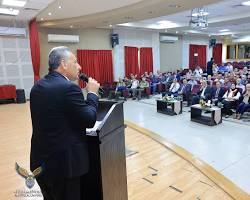
حفل تخريج جامعة الاستقلال
لحظة فخر واعتزاز بنجاح الطلبة وتفوقهم، ومساهمتهم في بناء المؤسسات الوطنية والأمنية.
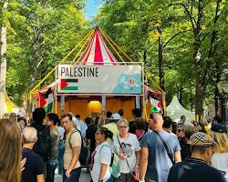
مهرجان أريحا الثقافي السنوي
فعالية ثقافية وفنية سنوية تشهد مشاركة واسعة من كافة أنحاء فلسطين، وتهدف إلى الحفاظ على التراث الفلسطيني وتعزيز السياحة.